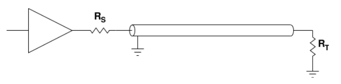
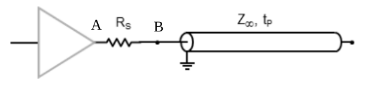

26. IWS, RWS va terminatsiya: liniyada uzatish vaqti va skew
1. Asosiy savol: birinchi sakrash chegarani kesadimi?
Qabul qilgich VIH ni kesgan paytda "1" ni sezadi (eng yomon holat). Lattice diagrammadagi qaysi to'lqin VIH ni birinchi bo'lib kesib o'tishiga qarab uch rejim bor. Hammasi RO / Z∞ nisbatiga bog'liq:
1) RO < Z∞: IWS (Incident Wave Switching, tushuvchi to'lqinda o'tish)
- Driver kuchli (katta tok beradi), birinchi sakrash v1 katta.
- Chegara birinchi to'lqin bilan kesiladi: qabul qilgich to'lqin yetib kelishi bilan sezadi. Eng tez, tezkor buslarda ishlatiladi.
- ΓD < 0: driverdan manfiy aks etish, tebranish (ringing) bo'ladi, chegara qayta kesilishi mumkin. Shuning uchun uzoq uchga terminatsiya kerak; terminatsiya energiya sarflaydi.
2) RO = Z∞: RWS (Reflected Wave Switching, aks etgan to'lqinda o'tish)
- Driver "moslangan": ΓD = 0, driverdan hech narsa qaytmaydi.
- Birinchi sakrash = barqaror kuchlanishning yarmi (VA/2). Uchi ochiq bo'lsa, uzoq uchda tP da VA/2 + VA/2 = VA bo'ladi.
- Uzoq uchdagi qabul qilgich tP da o'tadi. Driver yonidagi qabul qilgich faqat aks etgan to'lqin qaytganda (2tP da) aniq o'tadi.
- Nuqtadan nuqtaga (point-to-point) ulanish uchun yaxshi: IWS dan sekinroq, lekin kam quvvat.
3) RO > Z∞: ko'p aks etish (Multiple Reflections)
- Driver kuchsiz, birinchi sakrash kichik va chegarani kesa olmaydi.
- ΓD > 0 va ΓT > 0: hamma to'lqin bir xil ishorali, sekin monoton zinapoya, tebranish yo'q.
- Chegara bir necha borib-kelishdan keyin kesiladi: tTXmax = N · 2tP. Sekin.
2. Xulosa jadvali (slayd C3, "Summary")
| Rejim | tTXmin | tTXmax | tK (liniya uchlari orasida) | Xususiyat |
|---|---|---|---|---|
| IWS | 0 | tP | tP | tez, terminatsiyada statik quvvat |
| RWS | tP | 2tP | tP | o'rtacha tezlik, kam quvvat, point-to-point |
| Ko'p aks etish | … | N · 2tP | katta | sekin |
IWS da tTXmin = 0 (driver yonidagi qabul qilgich), tTXmax = tP (eng uzoqdagisi). Bu qiymatlar qabul qilgichlar joyi farqidan; bitta qabul qilgichning o'zi uchun IWS da skew 0 bo'ladi, chunki u chegarani bir zumda kesadi.
3. Terminatsiya turlari
| Parallel (RT = Z∞ uzoq uchda) | Ketma-ket (RO + RS = Z∞ driverda) | |
|---|---|---|
| Tezlik | + kichik kechikish (IWS) | − kattaroq kechikish (RWS) |
| Quvvat | − RT orqali doimiy tok, katta quvvat | + ochiq uch, barqaror tok yo'q, kam quvvat |
| Driver joyi | + liniya o'rtasidan ham haydasa bo'ladi | − faqat uchidan (o'rtadan liniyaga boshqa impedans ko'rinadi) |
Sig'imli yuklama ta'siri
Liniyaga ulangan har bir kirish sig'im qo'shadi (CU oshadi). Natijada: Z∞ = √(L/C) kamayadi, tezlik vP = 1/√(LC) kamayadi, birinchi sakrash kichiklashadi, dinamik quvvat PD = F·V²·C oshadi. Shuning uchun bus va platalar orasiga bufer (transceiver) qo'yiladi, SMD komponentlar, qisqa yo'lakchalar ishlatiladi.
4. Qabul qilgich joyiga qarab tTX va skew: 3 ta imtihon savoli
Recept: (1) v1 ni toping. (2) Uzoq uchda tP da (1 + ΓT)·v1 ni toping. (3) Driver uchida 2tP da v1 + v2 + v3 ni toping. (4) Har birini VIL va VIH bilan solishtiring.
012. A driver powered at 3.3 V (VOH = 3.3 V, VOL = 0 V) drives a transmission line with Z∞ = 50 Ω, propagation speed U = 0.7 c, length 20 cm, open at the far end. The receivers are CMOS circuits with VIL = 1 V and VIH = 2 V. Assuming the driver output resistance RO = 80 Ω, indicate whether the switching on a L-H transition of a receiver at the beginning of the line occurs on the reflected wave or on the incident wave.
Javob
VB(0) = 3.3 · 50/130 = 1.27 V < VIH = 2 V. Birinchi sakrash yetmaydi, demak liniya boshidagi qabul qilgich aks etgan to'lqinda (reflected wave, 2tP da) o'tadi.
044. (Xuddi shu liniya.) For the L-H transition by a driver with RO = 80 Ω, determine the transmission time and the skew time for a receiver located at the beginning of the line and for one located at the end of the line.
Javob
tP = 20 sm / 21 sm/ns ≈ 1 ns. ΓD = (80 − 50)/130 = 0.23, ΓT = +1.
Boshida: VB(0) = 1.27 V > VIL → tTXmin = 0. VB(2tP) = 1.27 + 1.27 + 0.23·1.27 = 2.83 V > VIH → tTXmax = 2tP = 2 ns. Skew = 2 ns.
Oxirida: VC(tP) = 2 · 1.27 = 2.54 V > VIH → tTX = tP = 1 ns, skew = 0.
082. A driver powered at 3.3 V and with RO = 70 Ω drives a connection with Z∞ = 60 Ω, propagation speed U = 0.7 c, length d = 30 cm, and open at the remote end. The receivers are CMOS circuits with VIL = 0.8 V and VIH = 2 V. All questions refer to the L-H (low-to-high level) transition. Determine the transmission times TTX and the skew TK for a receiver located close to the driver, and for a receiver located at the remote end of the line.
Javob
001 dan: v1 = 1.52 V, tP = 1.43 ns. ΓD = (70 − 60)/130 = 0.077.
Uzoq uchda: VC(tP) = 1.52 + 1.52 = 3.04 V > VIH → TTXmin = TTXmax = tP = 1.43 ns, TK = 0.
Driver yonida: 1.52 V > VIL → TTXmin = 0. VA(2tP) = 1.52 + 1.52 + 0.077·1.52 = 3.16 V > VIH → TTXmax = 2tP = 2.86 ns. TK = 2.86 ns.
ΓD > 0 bo'lgani uchun keyingi to'lqinlar ham musbat, boshqa hisoblash shart emas.
5. IWS uchun RS ni tanlash: 3 ta imtihon savoli
IWS sharti: birinchi sakrash VIH dan katta bo'lsin (L→H). Driver ideal (Roh ≈ 0) va oldiga RS qo'yilgan bo'lsa:
L→H: VOH · Z∞ / (RS + Z∞) > VIH (+ NM, agar shovqin zaxirasi berilgan bo'lsa) H→L (liniya VOH da edi): VOH · RS / (RS + Z∞) < VILIkkinchi formula qayerdan: liniya VOH da turibdi, driver 0 ga tushadi. Sakrash −VOH · Z∞/(RS + Z∞), demak qolgan kuchlanish VOH − VOH·Z∞/(RS + Z∞) = VOH · RS/(RS + Z∞). U VIL dan past bo'lishi kerak.

024. A driver is connected to a transmission line as in the figure. The line is 10 cm long, has Z∞ = 75 Ω, and the propagation speed is 0.7 c. The termination resistance RT is adapted. Parameters Driver: Voh = 3.0 V; Vol = 0 V; Vcc = 3.0 V (Roh and Rol negligible) Receiver: Vih = 2 V; Vil = 0.5 V. Consider only the L-H transition and determine the maximum value of the series resistance Rs which guarantees to work in Incident Wave Switching with a noise margin NM = 0.5 V
Javob
3 · 75/(RS + 75) ≥ 2 + 0.5 = 2.5 → 225 ≥ 2.5·RS + 187.5 → RS ≤ 15 Ω.
058. A driver with output impedance RS is connected to a transmission line as in the figure. The line is 20 cm long, has Z∞ = 80 Ω, and the propagation speed is 0.5 c. Parameters: Driver: VOH = 3.0 V; VOL = 0.3 V; Vcc = 3.3 V (supply voltage) Receiver: VIH = 2.2 V; VIL = 1.4 V. Determine the maximum value of RS which minimizes the delay in the transition L-H, such way that the skew is zero for all the receivers no matter where they are connected to the line.
Javob
"Kechikish minimal, skew hamma joyda 0" = IWS. 3 · 80/(RS + 80) > 2.2 → RS + 80 < 109.1 → RS < 29 Ω.

072. A driver is connected to a transmission line at point B in the figure. The line is 10 cm long, has Z∞ = 100 Ω, and the propagation speed is 0.7 c. Parameters Driver: Voh = 3.0 V; Vol = 0 V; Vcc = 3.0 V (Roh and Rol are negligible) Receiver: Vih = 2 V; Vil = 0.5 V. Determine the maximum value of the series adaptation resistance Rs which guarantees the work in Incident Wave Switching, considering the worst case between rising and falling transitions.
Javob
Ko'tarilish: 3 · 100/(RS + 100) > 2 → RS < 50 Ω.
Tushish: 3 · RS/(RS + 100) < 0.5 → 3RS < 0.5RS + 50 → RS < 20 Ω.
Ikkalasi ham bajarilishi kerak (eng yomon holat): RS < 20 Ω.
6. Imtihon masalasi: 2020-07 (7 ball)
"Consider the circuit in the schematic below made of an ideal transmission line TL with propagation time Tp = 5 ns and characteristic impedance Z∞ = 70 Ω that is driven between 0 V and Vg = 3.3 V by a generator with the output resistance Rg = 15 Ω. At the far end of the transmission line (node c) is connected a receiver with negligible input impedance and capacitance. What is the maximum voltage of the high level input threshold of the receiver, VIHmax, that ensures a stable reception of the high level with at most 7.5 ns delay?"
Tarjima: tP = 5 ns, Z∞ = 70 Ω, generator 3.3 V, Rg = 15 Ω. Uzoq uchda qabul qilgich (yuklamasi sezilarsiz, ya'ni uch amalda ochiq, rasmiy yechim ham shunday oladi). Qabul qilgich 7.5 ns ichida "1" ni barqaror qabul qilishi uchun VIH eng ko'pi bilan qancha bo'lishi mumkin?
Javob (yechim)
1. Γ lar: Γg = (15 − 70)/(15 + 70) = −0.647 (manfiy!). Γt = +1 (ochiq).
2. Rejim: 7.5 ns < 2tP = 10 ns. Uzoq uchga to'lqin 5 ns da keladi, keyingi o'zgarish 15 ns da. Demak 7.5 ns ichida faqat birinchi to'lqin bilan o'tish mumkin: IWS.
3. "Barqaror": 7.5 ns dan keyin chegara qayta kesilmasligi kerak. Γg manfiy bo'lgani uchun 3tP da kuchlanish pastga tushadi. VIH shu eng past qiymatdan ham past bo'lishi kerak.
4. Hisob: V(0) = 3.3 · 70/85 = 2.718 V.
tP da: (1 + 1)·2.718 = 5.44 V.
3tP da: (1 + Γt + Γt·Γg + Γt²·Γg)·V(0) = (1 + 1 − 0.647 − 0.647)·2.718 = 0.706 · 2.718 = 1.92 V.
5tP da: 4.19 V (yana ko'tariladi), tebranishlar so'nadi.
Javob: VIHmax = 1.92 V.
7. Imtihon masalasi: 2020-12 (7 ball)
"A transmission line with a specific impedance of 50 Ω is connected on one end to a rail-to-rail square wave driver circuit with output resistance 10 Ω, and at the other end to a receiver with negligible input capacitance and a 265 Ω input impedance. Considering a propagation time TP of the signal over the transmission line of 5 ns, calculate for a transition low-to-high, from 0 V to 5 V, of the driver output: 1. the voltage of the signal at the receiver input at the time t = 2 TP (1 point); 2. the voltage of the signal at the receiver input at the time t = 4 TP (1 point); 3. the voltage of the signal at the receiver input at the time t = 6 TP (1 point); 4. the steady-state voltage on the line (after the transients are extinguished) (2 points); 5. the minimum noise margin of the receiver that ensures a firm incident wave switching (single switching, no ringing) (2 points)."
Javob (yechim)
Γ lar: ΓT = (265 − 50)/(265 + 50) = +0.68. ΓG = (10 − 50)/(10 + 50) = −0.67. U = v1 = 5 · 50/60 = 4.17 V.
1. t = 2tP: qabul qilgich (uzoq uch) tP da o'zgargan, 3tP gacha o'zgarmaydi. V = (1 + 0.68)·4.17 = 7.01 V.
2. t = 4tP (3tP dagi qiymat): (1 + ΓT + ΓTΓG + ΓT²ΓG)·U = (1 + 0.68 − 0.456 − 0.310)·4.17 = 3.82 V.
3. t = 6tP (5tP dagi qiymat): yana ikki had: + ΓT²ΓG² + ΓT³ΓG² = + 0.207 + 0.141. Jami (0.915 + 0.348)·4.17 ≈ 5.27 V.
4. Barqaror: 5 · 265/(10 + 265) = 4.82 V.
5. Shovqin zaxirasi: qabul qilgich bir marta o'tib, qayta "0" ga qaytmasligi kerak. Eng past nuqta 3.82 V. Rasmiy yechim yuqori sath 5 V dan hisoblaydi: NM = 5 − 3.82 = 1.18 V.
8. Slayddagi mashq C3.1 (qisqa jadval)
Z∞ = 70 Ω, tP = 10 ns, VA = 5 V, VIH = 3 V. Har bir holatda VIH qachon kesilishini lattice usuli bilan topamiz (driver yonida va uzoq uchda):
| RO | RT | ΓD | ΓT | v1 | Vbarq | Driver yonida | Uzoq uchda | |
|---|---|---|---|---|---|---|---|---|
| a | 100 | ∞ | +0.18 | +1 | 2.06 | 5.00 | 2tP (RWS) | tP |
| b | 100 | 200 | +0.18 | +0.48 | 2.06 | 3.33 | 2tP | tP (3.05 V, chegaraga juda yaqin) |
| c | 50 | 200 | −0.17 | +0.48 | 2.92 | 4.00 | 2tP (2.92 < 3) | tP |
| d | 50 | 100 | −0.17 | +0.18 | 2.92 | 3.33 | 2tP | tP |
| e | 10 | 100 | −0.75 | +0.18 | 4.38 | 4.55 | 0 (IWS) | tP |
| f | 10 | 10 | −0.75 | −0.75 | 4.38 | 2.50 | barqaror 2.5 V < VIH: "1" umuman qabul qilinmaydi | |
Xulosa: faqat (e) da ikkala uch ham birinchi to'lqinda o'tadi (IWS). (f) da RT juda kichik: barqaror kuchlanish VIH ga yetmaydi. Slaydda VIH 3…4 V oraliqda deyilgan: VIH = 4 V bo'lsa, (b), (d), (f) da Vbarq < 4 V, ya'ni ular umuman ishlamaydi.
- Z∞ = 50 Ω, VOH = 3.3 V, VIH = 2.3 V. IWS uchun RS eng ko'pi bilan qancha (L→H)?
- Qaysi terminatsiya kam quvvat sarflaydi va nega?
- RO = Z∞, uchi ochiq, VA = 5 V, VIL = 1.5 V, VIH = 3.5 V, tP = 2 ns. Driver yonidagi qabul qilgich uchun tTXmin, tTXmax, tK?
Javoblar
- 3.3·50/(RS + 50) > 2.3 → RS + 50 < 71.7 → RS < 21.7 Ω.
- Ketma-ket: liniya oxiri ochiq, barqaror holatda tok oqmaydi.
- v1 = 2.5 V > VIL → tTXmin = 0. 2.5 < VIH; 2tP da 5 V → tTXmax = 4 ns. tK = 4 ns (RWS).
Yangi atamalar
| Atama | Inglizchasi | Ma'nosi |
|---|---|---|
| IWS | Incident Wave Switching | Birinchi to'lqinda o'tish (RO < Z∞) |
| RWS | Reflected Wave Switching | Birinchi aks etgan to'lqinda o'tish (RO = Z∞) |
| Ko'p aks etish | multiple reflections switching | Bir necha borib-kelishdan keyin (RO > Z∞) |
| Tebranish | ringing, oscillations | Manfiy Γ tufayli kuchlanish yuqori-past bo'lishi |
| Parallel terminatsiya | parallel termination | Uzoq uchda RT = Z∞ yerga |
| Ketma-ket terminatsiya | series termination | Driver chiqishida RS, RO + RS = Z∞ |
| Lokal / umumiy skew | local / overall skew | Bitta qabul qilgich ichida / barcha qabul qilgichlar bo'yicha |
| Nuqtadan nuqtaga | point-to-point | Bitta driver, bitta qabul qilgich |
| Bus | bus (multipoint) | Ko'p qabul qilgichli umumiy liniya |
| Shovqin zaxirasi | noise margin NM | Chegaragacha qolgan kuchlanish zaxirasi |
📝 Konspekt (daftarga yozib oling)
- Recept: v1 → uzoq uchda (1+ΓT)v1 → driver uchida 2tP da v1+v2+v3 → VIL, VIH bilan solishtirish.
- "Stable/firm reception" = manfiy Γ tufayli keyingi pasayish ham chegaradan yuqori qolsin.
- VOH ishlating, Vcc emas (058).
- Parallel: tez, ko'p quvvat, o'rtadan haydash mumkin. Ketma-ket: kam quvvat, sekin, faqat uchidan.
- Sig'im qo'shilsa: Z∞ ↓, vP ↓, birinchi sakrash ↓, PD ↑.
- Javoblar: 012 → aks etgan to'lqinda; 044 → boshida 0…2 ns (tK 2 ns), oxirida 1 ns (tK 0); 082 → oxirida 1.43 ns (tK 0), boshida 0…2.86 ns (tK 2.86 ns); 024 → RS ≤ 15 Ω; 058 → RS < 29 Ω; 072 → RS < 20 Ω; 2020-07 → 1.92 V; 2020-12 → 7.01, 3.82, 5.27, 4.82, 1.18 V.